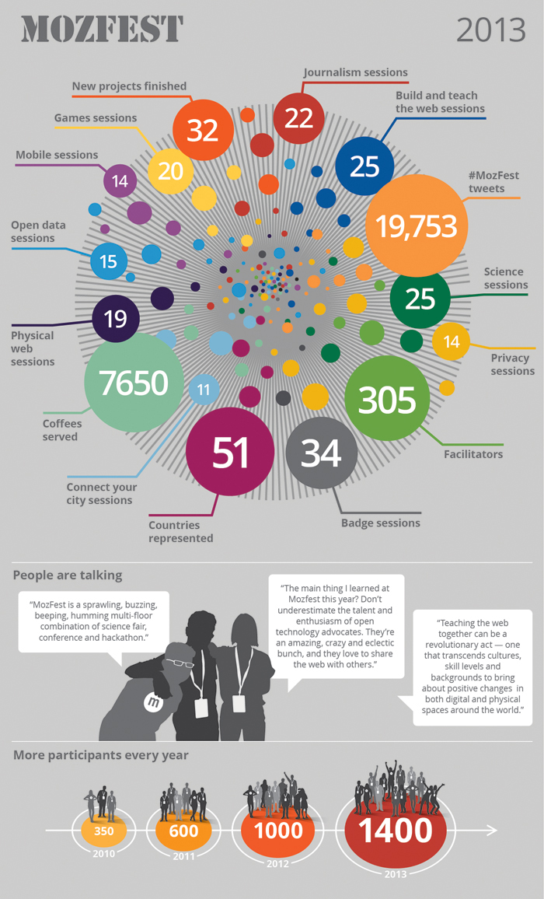
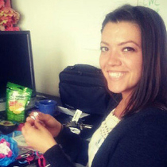
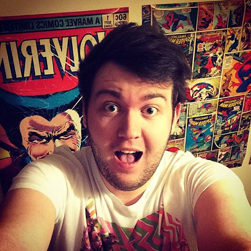

About the Mozilla Festival
Dear Webmakers,
Help us build a truly global web.
Over the next few years, billions of new Internet users will come online thanks to affordable mobile technologies. MozFest is a hands-on festival dedicated to forging the future of this open, global web. It’s our chance to dream at scale: how will we build and teach the web - both technically and culturally - with these billions of new users?
Packed with passionate technologists and creators eager to share their skills, MozFest invites you to arrive with an idea, demo and hack on innovative digital solutions, bring a pragmatic approach to solving real problems and forge new collaborations to tackle pressing issues on the web.
Our aim this year is to showcase and develop best practices for community leadership. Join us in discovering how distributed organizing and sharing skills through teaching and learning can build a web filled with opportunity for all!
— Mark Surman, Executive Director of Mozilla
What We Made Last Year
From 3-D Papercrafts to a watercolour printer to a hack of Popcorn Maker for especially for journalists, MozFest 2013 was overflowing with brilliant projects and ideas. See what we made together and dream about what we can accomplish at MozFest 2014!

A History of MozFest
Mozfest started in 2010 in Barcelona. Dedicated to finding, energizing and creating a community of people working with technology to build participation, understanding and control into Internet life, the first Festival focused on the pillars of Mozilla at the time: working in the open, smart crowdsourcing and open innovation, and lots of local and regional communities and gatherings.
More than 3,300 people from 51 countries have collaborated at MozFest to shape the future of the web. Join us in 2014 for our fifth festival as we celebrate what we've achieved so far, and cast our eyes forward to what we can do next.
As a participatory festival, MozFest is learning from and sharing best practices with other collaborative spaces, especially Aspiration and the Open Knowledge Festival. Thank you!"
The Team
-
Sarah Allen — Festival Producer
Sarah Allen is an event manager at Mozilla London and this year's MozFest producer. When not focused on Mozfest, she helps out with the Maker Party and other Webmaker events.
Sarah draws her experience from a diverse events background having worked with creative and inspiring companies such as Movember Europe, Secret Cinema and CSM iLUKA. MozFest 2014 will be Sarah's second festival. -
Michelle Thorne — Festival Director
Michelle Thorne is Mozilla’s Director for the Webmaker Mentor team, aiming to grow communities and best practices to teach web literacy. Through participatory events and professional development, she helps mentors around the world to bring together webmakers of various stripes to build, make, and learn from each other. Michelle curates MozFest and is proud to see the festival into its fifth year. -
 Misty Avila — Festival Curator
Misty Avila is Director of Programs at Aspiration, an NGO based in San Francisco, California that supports community-based organizations to use technology effectively to achieve their social change efforts. She oversees Aspiration's program and communications activities and has experience training diverse audiences from urban and rural areas around the globe. With her background in both social justice groundwork and online advocacy, she is passionate about bringing people together and honored to be part of the MozFest community. -
Allen “Gunner” Gunn — Festival Co-designer and MC
Gunner is Executive Director of Aspiration in San Francisco, USA, and works to help NGOs, activists, foundations and software developers make more effective use of technology for social change. He is an experienced facilitator with a passion for designing collaborative open learning processes. -
Spike — Festival Volunteer Coordinator
Chris Foote (always known as “Spike”) is the Volunteer Coordinator for MozFest. A life-long professional electronic engineer with a passion for science and technology, he is a volunteer with global organizations such as CrisisCommons, CrisisMappers, OpenStreetMap (OSM), Humanitarian OSM Team (HOT), StandbyTaskForce (SBTF). He has co-organized a very successful London-based monthly Meetup group for people involved in or interested in ICT4D (Information and Communication Technologies for Development) as well as countless BarCamps and Hackathons. As a long-time user and supporter of Mozilla, he is honoured to be asked to be Volunteer Coordinator for the second year running. -
 Marc Walsh — Production Assistant
Marc Walsh is a Production Assistant at Mozilla Foundation, only joining the team in September for the final stretch. He was worked on the past 3 festivals that have been held at Ravensbourne as he used to be a student there. Marc in the past has worked in events, theatre and television, from The Great British Bake Off to the Edinburgh TV Festival. Last year he also taught theatre in Saudi Arabia as part of a cultural exchange program. He's going to miss being able to jump into the fox suit, but it's time to move on!